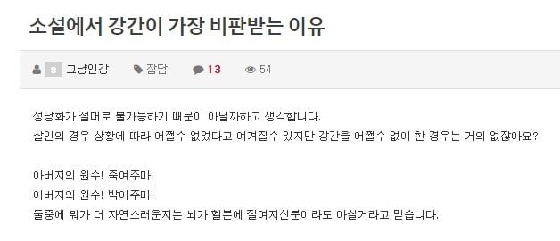

소설에서 강간이 가장 비판받는 이유
댓글
쌍수도려!
선협물.... 에서는 다 죽이는 거 아님???ㅋㅋㅋㅋㅋㅋㅋㅋ
나 회귀수선전인가... 그거만 웹툰으로 보고 있는데 그냥 다 죽이던데
선협물은 걍 주인공 말고는 다 영약으로봄ㅋㅋ
뭐 째려본다고 걍 일가족을 넘어 삼족으로 잡아다가 단약으로 만드는거보고 어지럽던데
진지빨자면 소설이든 영화든 차라리 살인, 테러 소재면 걍 킬링타임으로 봐도 재밌는대 강간같은 성범죄는 걍 기분이 존나 나쁨
결말이 복수극이여도
정작 고대 소설 신화에서는 존나 나오는데
(대충 그 만화)
레츠 퍽 나찌
부에노...엑셀런트!
실제 인터넷에서 히틀러 드립도 잘만 치면서 웃고 떠드는데
강간을 소재로 웃고 떠들진 않음
강간이 인종학살보다 나빠서 그런 건 절대 아니고
이유 있는 인종학살은 이유 있는 강간보다 낫다? 그것도 절대 아니고...
합리적인 아무리 이유를 붙여도 이런 잣대 들이대면 설명을 못 함
못 참겠다 로빈
이거 추가하려고 했는데
남자 상대로 강간하는 드립은 잘만 하는 걸 보면 정확히는 강간이어서도 아님
음..
???: 여자는 모두 죽이고 남자는 겁탈하라!!
뭔 씹소리를 진지하게 생각하냐
최애 히로인 살해당하기 vs 강간당하기
후자가 더 싫긴 하네


그냥 최근 여성향 소설에서 독자층이 싫어하니 그런거 아닌가? 만화든 소설이든 악인에 있어서 저 소재는 어느정도 있어왔잖아
여성향 피폐물이 주인공 강간당하는 전개가 더 많이 나온다는데?
언젯적 ㅎ븐이여ㅋㅋㅋㅋㅋㅋㅋ
가끔 무협에서는 허락되는 장면도 나옴
구양절맥이나 구음절맥때문에 죽어가는 상대를 살리겠다는 목적으로 강간함.
이후, 상대는 어쨌건 강간당했다며 대상을 경멸하는 전개로도 감.
행위의 주체를 여성으로 생각해봐
여주가 아버지의 원수를 죽인다 -> 이상하지 않음 // 여주가 아버지의 원수를 강... 네? 뭔 개소리에요 18
여자는 죽이고 남자는 겁탈하라 <-이거로 ?는 해도 지랄하는거 못본거 같다
섹스가 아무래도 번식행위라는 느낌이 있어서?
인간성을 건드는 느낌
형법도 바꿔야됨
살인보다 강간, 성추행을 더 쎄게 해야함
우리나라 ?
겐고로에선 자주하던데?
현실에서 당해보면 그딴 소리 안나옴
매체에서는 죽는게 있으나 마나 아무 상관없는 엑스트라니 그딴 소리가 나오지
죽음이 가까웠던 시절엔 100이면 100 대주지 죽기 선택하는 인간 없었음
선협물에서는 존나 나오더라 그래서 안봄